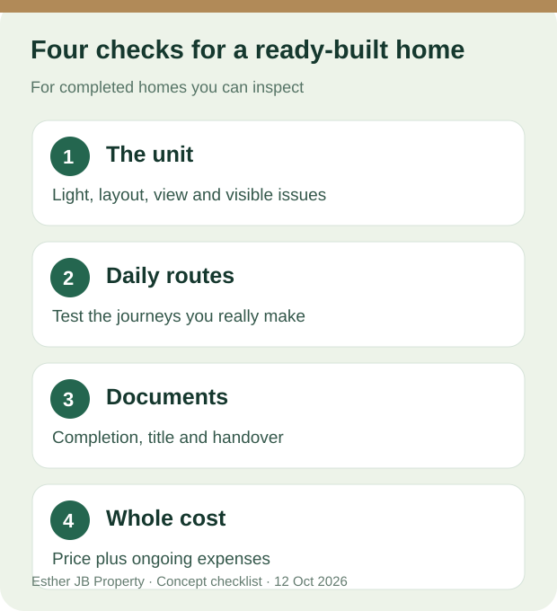

Johor Bahru buyer guide · Sources checked: 12 October 2026
Ready-Built or Near-Handover Homes in JB: Which Fits Your Plan?
If you hope to move sooner, separate two choices: a completed home whose specific unit can be arranged for viewing, and a new project described as nearing handover whose progress still needs checking. The first may be a newly completed or resale unit, with different contracts and conditions. The second must not be presented as already available for key collection. Whether you prefer Austin, the CIQ area or another part of Johor Bahru, defining the stage first makes your search more useful. Malaysia's National Housing Department buyer tips

Original conceptual image showing two home types. It is not a photograph, available unit or delivery promise for any development.

Lifestyle illustration: families, couples and independent buyers can all begin with their own timing and daily needs. The people and interior do not depict an actual listing.
Four practical advantages of a completed home you can view
These points apply when you can inspect the specific home. If a new project has not reached that stage, use the document and progress checks below instead of assuming the same advantages.
1. You can inspect the unit you are considering
Stand in the actual living room. Look at daylight, the view, ventilation, kitchen circulation and usable bedroom space. If possible, revisit at a different time of day. Record the unit identifier alongside your notes so you can compare what you saw with written property details.
For a landed home, pay attention to the roof, marks of water entry, drainage, parking and access road. For a serviced apartment, examine the unit orientation, lifts, corridors, parking route and facilities that are actually open. What you can see during one viewing is useful evidence, but it is not a structural survey; obtain appropriate professional checks when something is unclear.
2. You can test more of the everyday journey
Walk the route from the front door to the parking space and main road. Try the route to work, school or the places your household uses regularly. At a completed serviced apartment, you may be able to observe shared spaces and current management. At a landed home, you can examine the street, nearby parking and drainage. A visit describes conditions on that day; it cannot guarantee future traffic, management or neighbours.
3. Handover questions become more concrete
For a completed unit, you can ask for evidence about completion and the proposed handover. Yet construction completion, the Certificate of Completion and Compliance (CCC), vacant possession (VP) and receiving keys after your transaction are distinct steps. Ask the seller or developer for documents relevant to the specific purchase, and have your lawyer explain the expected sequence. The Malaysian housing ministry's guidance distinguishes completed housing, CCC and VP. Do not turn a sales phrase such as “move in now” into a guaranteed date. KPKT guidance
4. You can build a more specific cost comparison
Use the actual home you viewed when listing the purchase price, visible work you may need to do and ongoing costs. For a serviced apartment, ask about maintenance charges, the sinking fund, parking and the services you will use. KPKT's strata handbook describes different purposes for maintenance charges and the sinking fund; amounts must be verified for each scheme. KPKT Strata Handbook 2.0
For a landed home, budget for building upkeep, drainage, the roof and everyday travel. Neither type should be chosen from an advertised price or a preliminary mortgage estimate alone. A lender will assess financing for the individual case.

Original viewing checklist. It is a set of questions, not a property quality certificate.
What if the new project is nearing handover?
It may be worth considering if its layout and location suit you and you can wait for the actual delivery. But “near handover” is a description to verify, not confirmation that CCC has been issued, VP has occurred or keys will be available on a particular date. If the specific unit is not accessible, record whether you saw a show unit, a floor plan or only the visible site. Do not use a concept image as evidence of a completed home.
Ask the developer or seller for the project name, applicable developer and advertising/sales permit details, sale agreement, written expected completion or handover information and latest formal progress. The National Housing Department's buyer tips identify licences, permits, land status, sales materials and expected completion dates as information to check. Have the lawyer explain the documents for that specific transaction. National Housing Department buyer tips
Landed home or serviced apartment?

Lifestyle illustration, not a photograph of a listed unit or an actual buyer.
If you value more independent space and parking arrangements, start with landed homes, then inspect the building, upkeep needs and title. Malaysia's Department of Director General of Lands and Mines explains that restrictions, caveats and charges can affect transfer and may require consent; ask the lawyer handling the transaction to check the relevant title. JKPTG landowner guidance
If you prefer a managed building and shared facilities, start with serviced apartments, then examine the actual unit and building operation. Ask for the title and permitted use, maintenance charges, sinking fund, parking terms and which facilities are open. The words “serviced apartment” alone do not tell you the exact title, fees or financing terms.
The useful first filters are area and handover stage, then property type. Austin and the CIQ area have different everyday routes; they are search entry points here, not a claim that particular projects are available or close to delivery. Use actual-unit evidence for completed homes, and mark what remains unverified for a near-handover project.
Looking in Austin or near CIQ for a ready or near-handover home?
Tell Esther your budget range, preferred area (Austin / CIQ / elsewhere), landed or serviced-apartment preference, whether you want a completed or near-handover home, and hoped-for move-in timeframe. We can identify options that can be verified at that time, then separately confirm whether the exact unit is viewable and what the formal handover status is. No project names or prices are listed here because availability and price need current verification.
Ask Esther about homes matching my timeline
Send Esther my requirements%3A%20%3B%20landed%20or%20serviced%20apartment%3A%20%3B%20completed%20or%20near-handover%3A%20%3B%20target%20move-in%3A%20.)
Related reading: Meet Esther · Six questions before viewing a new condo · Five ready-home questions
Sources and review date
- KPKT guidance on completed housing, CCC and VP
- National Housing Department buyer tips on project documents and expected completion
- KPKT Strata Handbook 2.0: maintenance charges and sinking fund
- JKPTG landowner and transfer guidance
Checked on 12 October 2026. Austin and CIQ are search areas only; no individual project is verified or recommended here. Viewing tips are practical suggestions, not confirmation that any particular unit has passed inspection. No handover date, loan, price or return is promised. Check each contract, official document and individual property.